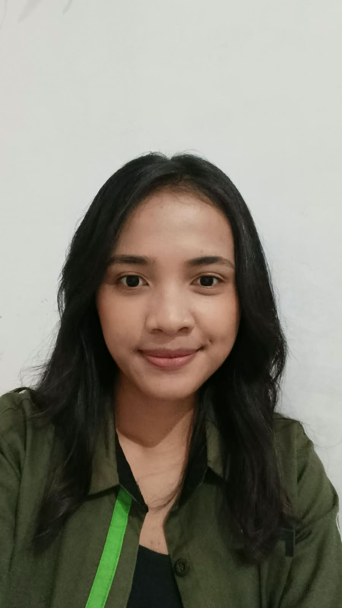

Asi Jelita Tamba
NIM: 2582002
Program Studi: Sistem Informasi
Universitas: Universitas Advent Indonesia (UNAI)
Saya seorang mahasiswa sistem informasi yang ingin terus berkembang di dunia IT dan menjadi pribadi yang berguna bagi sesama.
Biografi Saya
Halo, nama saya Asi Jelita Tamba. Saya kuliah di Universitas Advent Indonesia dan memilih jurusan Sistem Informasi karena ingin berkembang di dunia IT dan menambah wawasan.
Saya adalah pribadi yang menyukai hal-hal yang membuat saya penasaran tentang dunia yang saat ini berkembang lebih cepat. Saya juga sangat ingin belajar banyak hal selama saya berkuliah di UNAI ini. Harapan saya adalah dapat bermanfaat di masa depan ketika perkembangan teknologi sudah semakin canggih.
Di waktu luang, saya suka memasak dan mencoba banyak resep dari Youtobe untuk saya pelajari. Saya juga suka menonton di saat saya merasa bosan dan jalan sore sebentar menghilangkan stres.
Hobi dan Tujuan
Hobi Saya
Kegiatan yang saya lakukan untuk mengisi waktu luang:
- Menonton - merasa lebih tenang dan tidak stres.
- Memasak - mencoba resep sederhana dan membaginya ke orang lain.
- Jalan sore - menjaga kesehatan dan menenangkan pikiran.
Tujuan Pribadi
Hal-hal yang ingin saya capai, diurutkan dari yang terdekat:
- Menyelesaikan kuliah Sistem Informasi dengan baik.
- Mengembangkan kemampuan di bidang IT dan pemrograman web.
- Menjadi anak IT yang berguna bagi masyarakat.
Informasi Akademik
IPK saya dari semester ganjil dan genap tahun 2025/2026
| Nomor | Semester | Tahun Akademik | IPK |
|---|---|---|---|
| 1 | Semester Ganjil | 2025/2026 | 3.4 |
| 2 | Semester Genap | 2025/2026 | 3.5 |